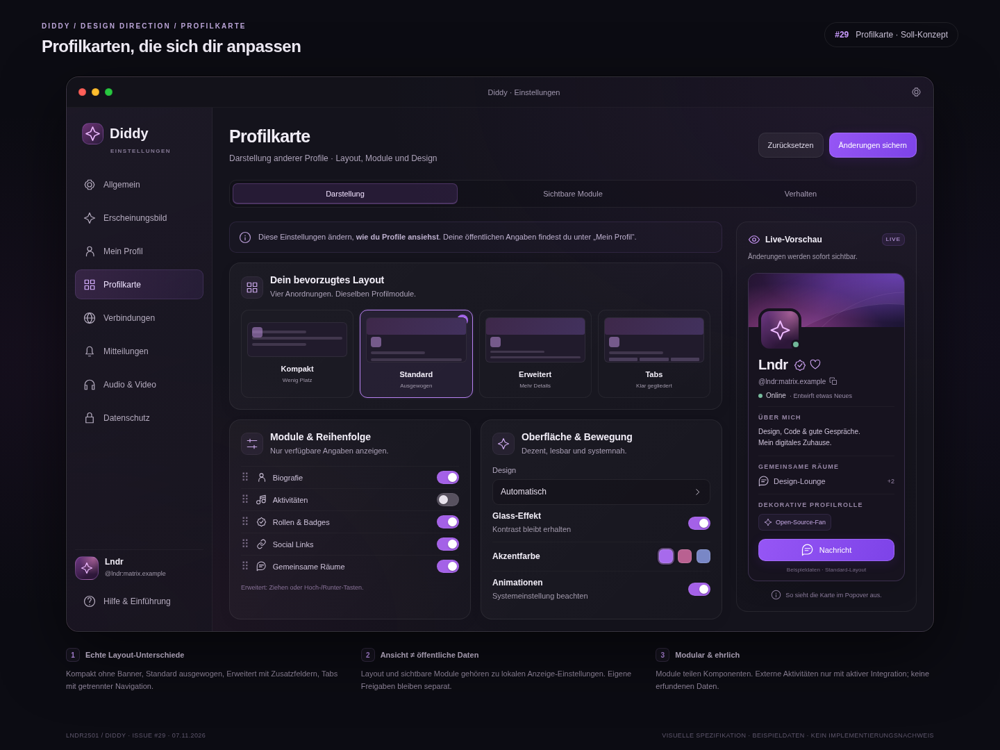

Dark Glass · Aurora-Licht · modulare Karten · kontrollierte Neon-Akzente · macOS-Nähe

Soll-Konzepte mit Beispieldaten, keine Screenshots einer fertigen Implementierung. Offene Architekturfragen und bekannte Grenzen sind pro Issue vermerkt. Die Vorlagen dienen als visuelle Referenz für die Umsetzung.
Quelle: offene Issues inklusive Kommentare und Referenzbilder · gelesen am 07.11.2026